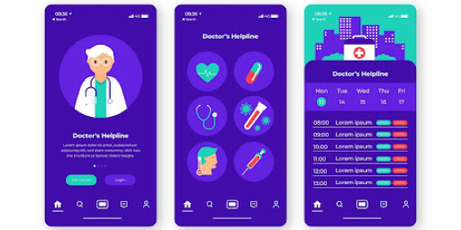
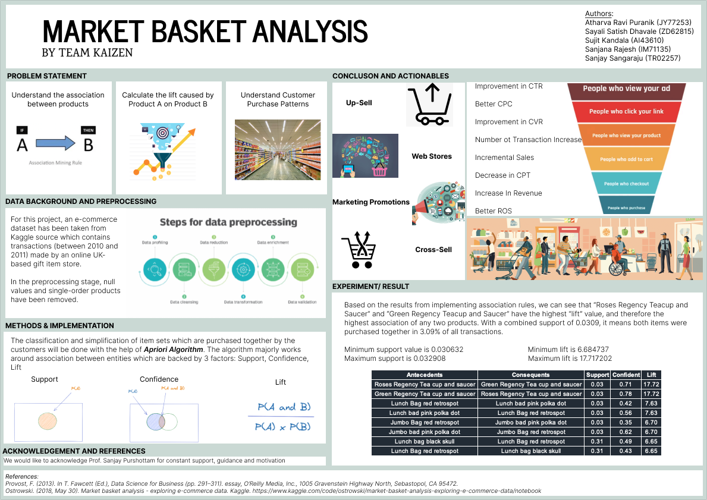

SnowFlake FinOps
Cloud Cost Optimization Project

Transformed a retail client’s legacy data pipeline to Snowflake, enabling real-time analytics and cost control.
Assessed legacy inefficiencies: Identified costly data usage, key revenue drivers, and high-query users.
Migrated and rebuilt analytics: Designed Snowflake architecture, migrated data, and automated dashboards for usage and cost.
Cut monthly spend by 63%: Rightsized compute, implemented auto-suspend, optimized queries, and tiered cold data.
Established FinOps discipline: Enabled showback, proactive monitoring, and continuous optimization for sustainable cloud savings
Airbnb Insights Analysis using AWS
AWS Data Pipleine Project


Built an end-to-end AWS data pipeline to extract, analyze, and surface actionable insights from Airbnb listing and review data.
Automated ingestion & modeling: Used Lambda and Glue Crawler to structure listings and reviews from S3 into relational tables for LA and NYC.
Analytics at scale: Queried multi-city datasets with Athena to uncover factors affecting ratings, detect pricing anomalies, and highlight top-performing listings and hosts.
Integrated machine learning: Leveraged EMR (Spark, JupyterHub) to experiment with models predicting rating and price trends, overcoming environment and package hurdles.
Production-ready workflow: Achieved a reusable, scalable cloud setup combining automated ETL, serverless analytics, and ML—enabling further enhancements like BI dashboards and real-time streaming.
FinOps in Sigma
Cloud Cost Optimization Project
Optimized Snowflake usage via warehouse rightsizing, event analysis, and proactive FinOps dashboards, reducing top compute/storage costs and improving efficiency.
Diagnosed inefficiencies: Pinpointed over/underutilized warehouses, storage growth spikes, and cost outliers.
Rightsized & tuned: Adjusted autosuspend cycles, scaled heavy spenders, and optimized high-latency workloads.
Enforced accountability: Implemented real-time credit tracking and showback; drove continuous savings and operational improvements
Tableau Data Visualization
Data Storytelling Projects

Multiple visual dashboards that effectively summarize datasets which could be used for data driven decision making.
1. Google trending searches in football over states in US.
2.Created visual comparisons using Tableau, highlighting key areas where the store underperformed relative to competitors. Identified trends in negative feedback and provided actionable insights to improve customer satisfaction.
3. The final dashboard helped the business prioritize strategic improvements to address recurring customer concerns and enhance its competitive position.
Symptom Diagnosis Healthcare App
Advanced AI Project

This project revolves around creating a cost-effective healthcare application aimed at alleviating the strain on traditional emergency rooms by providing remote, non-critical care. The system leverages AI-driven diagnostics, on-demand consultations, and integrated pharmacy delivery to improve accessibility and reduce unnecessary in-person visits. By incorporating a user-friendly interface, patients can quickly input symptoms, receive accurate treatment recommendations, and manage medication orders in one centralized platform.
Our approach included a feasibility study (technical, economic, organizational, schedule), a cost–benefit analysis, and a clear risk matrix to ensure both viability and compliance with healthcare regulations (e.g., HIPAA). The application’s Agile development methodology allowed for iterative testing and stakeholder feedback, while semi-structured interviews and direct observations informed functional and non-functional requirements. Altogether, this solution addresses high healthcare costs, improves patient outcomes, and demonstrates the potential for scalable telehealth innovation.
Air Quality Analysis
Data Science and Statistics Project
As urbanization accelerates, understanding and mitigating the impact of air pollution on public health become paramount. This project focuses on conducting a comprehensive analysis of air quality in Los Angeles, utilizing data science tools and Python programming to assess the health implications of pollution.
In the pursuit of assessing air quality in Los Angeles, this project adopts a multidisciplinary approach, combining Python programming, data science tools, and interactive visualizations. The exploration of diverse modeling techniques and the incorporation of sensitivity analyses contribute to a comprehensive understanding of the factors influencing air pollution. This project stands as a testament to the power of data science in addressing critical environmental challenges and fostering a healthier, more sustainable future.
Product Recommendation System
Data Science Project

In the dynamic realm of E-commerce, understanding customer purchasing patterns is critical for boosting sales and enhancing customer satisfaction. This project delves into Market Basket Analysis, specifically utilizing the Apriori Algorithm, a powerful tool for association rule mining. The primary goal is to uncover relationships between products and predict the likelihood of items being purchased together.
Market Basket Analysis, powered by the Apriori Algorithm, serves as a valuable tool for E-commerce retailers seeking to understand and leverage customer purchasing patterns. The insights derived from this analysis not only empower retailers to make data-driven decisions for product placement and promotions but also contribute to a more personalized and satisfying shopping experience for customers. This project underscores the potential of data mining techniques in shaping the dynamics of online retail.